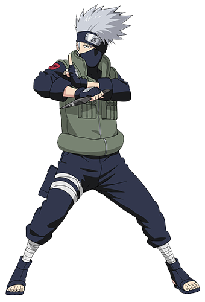

Hatake kakashi
Rokudaime Hokage

- Biodata Hatake Kakashi
- Latar belakang
Kakashi Hatake (はたけカカシ Hatake Kakashi) adalah tokoh fiktif dalam serial manga dan anime Naruto. Ia merupakan Hokage Keenam (6番目の火影 Rokudaime Hokage) dan juga guru dari Naruto, Sasuke, dan Sakura. Ia juga dikenal sebagai "Ninja Peniru" karena konon jumlah jurus yang sudah ia tiru mencapai seribu jurus. Secara harfiah, nama Kakashi dalam bahasa Jepang berarti orang-orangan sawah.
Biodata Hatake kakashi
Nama: Hatake kakashi
Julukan: Rokudaime Hokage (Hokage Keenam),Sharingan no Kakashi,copy ninja
Tanggal Lahir: 15 September
Klan: klan Hatake
Afiliasi: Desa Konoha
Status:Hidup
Gender: Laki-laki
Kekkei Genkai: Sharingan (sebelum akhirnya kehilangan mata Sharingan-nya)
Kakashi adalah anak dari Hatake Sakumo, seorang ninja terkenal dari Konoha. Kakashi dikenal sebagai jenius sejak kecil, lulus dari akademi pada usia lima tahun dan menjadi chūnin pada usia enam tahun. Dia kemudian menjadi murid dari Namikaze Minato, Hokage Keempat. Setelah kematian teman dekatnya, Obito Uchiha, Kakashi menerima Sharingan dari Obito sebagai hadiah terakhirnya. Kakashi kemudian dikenal sebagai "Kopi Ninja" karena kemampuannya menyalin lebih dari seribu jutsu dengan Sharingan. Dia juga dikenal sebagai pemimpin Tim 7, yang terdiri dari Naruto Uzumaki, Sasuke Uchiha, dan Sakura Haruno. Setelah Perang Dunia Ninja Keempat, Kakashi diangkat menjadi Hokage Keenam.
Jutsu yang Dimiliki Hatake kakashi
- Sharingan dan Mangekyō Sharingan:
- Raikiri
- Chidori: Serangan petir konsentrasi yang sangat kuat, menghasilkan kecepatan dan kekuatan yang cukup untuk menembus hampir semua benda.
- Kuchiyose no Jutsu (Summoning Jutsu)
- Kamui: Teknik ruang-waktu yang memungkinkan Kakashi mengirim objek ke dimensi lain.

- Teknik serangan petir yang sangat kuat yang dikembangkan dari Chidori. Kakashi mengandalkan kecepatan tinggi untuk meningkatkan daya hancur serangan ini.

Ninken (Ninja Hounds): Kakashi dapat memanggil sekelompok anjing ninja untuk melacak, menyerang, atau membantu dalam berbagai situasi.